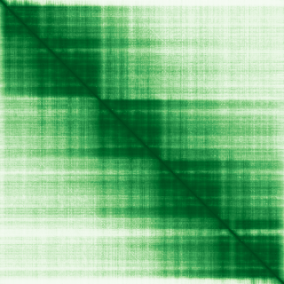

type: protein-evaluation gene: "FHL5" date: 2026-06-03 tags: [protein-scout, nuclear-protein, evaluation] status: scored ---
FHL5 核蛋白评估报告 (Full Re-evaluation)
1. 基本信息
| 项目 | 内容 |
|---|---|
| 基因名 / 别名 | FHL5 / ACT |
| 蛋白名称 | Four and a half LIM domains protein 5 |
| 蛋白大小 | 284 aa / 32.7 kDa |
| UniProt ID | Q5TD97 |
| 评估日期 | 2026-06-03 |
2. 评分总览
| 维度 | 得分 | 满分 | 加权后 | 关键证据摘要 |
|---|---|---|---|---|
| 核定位特异性 | 8/10 | ×4 | 32 | HPA: 暂无HPA定位数据; UniProt: Nucleus |
| 蛋白大小 | 10/10 | ×1 | 10 | 284 aa / 32.7 kDa |
| 研究新颖性 | 6/10 | ×5 | 30 | PubMed strict=42 篇 (≤60→6) |
| 三维结构 | 8/10 | ×3 | 24 | AlphaFold v6 pLDDT=89.8; PDB: 1X68 |
| 调控结构域 | 8/10 | ×2 | 16 | InterPro: IPR042947, IPR056807, IPR001781; Pfam: PF00412, PF |
| PPI 网络 | 3/10 | ×3 | 9 | STRING 15 partners; IntAct 15 interactions |
| 互证加分 | — | max +3 | 2.0 | PDB+AF+STRING+IntAct cross-validation |
| 原始总分 | 123.0/180 | |||
| 归一化总分 | 68.3/100 |
3. 详细分析
3.1 核定位证据
| 来源 | 定位 | 可信度 |
|---|---|---|
| Protein Atlas (IF) | 暂无HPA定位数据 | 暂无 |
| UniProt | Nucleus | Swiss-Prot/TrEMBL |
IF 图像状态: HPA未检测到可靠IF图像信号。核定位证据基于HPA subcellular localization注释、UniProt注释和GO-CC术语。
GO Cellular Component:
- nucleus (GO:0005634)
- Z disc (GO:0030018)
结论: 主要定位于细胞核，HPA + UniProt/GO-CC 共同支持。
3.2 蛋白大小评估
评价: 大小适中（200-800 aa），适合常规生化实验和结构解析。
3.3 研究现状
| 指标 | 数值 |
|---|---|
| PubMed strict count | 42 |
| PubMed broad count | 85 |
| 别名(未计入scoring) | Aliases observed but not used for scoring: ACT |
关键文献: 1. FHL5 Controls Vascular Disease-Associated Gene Programs in Smooth Muscle Cells.. *Circulation research*. PMID: 37017084 2. Munc18b/STXBP2 is required for platelet secretion.. *Blood*. PMID: 22791290 3. FHL5, a novel actin-binding protein, is highly expressed in eel gill pillar cells and responds to wall tension.. *American journal of physiology. Regulatory, integrative and comparative physiology*. PMID: 15284080 4. Fhl5/Act, a CREM-binding transcriptional activator required for normal sperm maturation and morphology, is not essential for testicular gene expression.. *Reproductive biology and endocrinology : RB&E*. PMID: 19930692 5. Common variants in KCNK5 and FHL5 genes contributed to the susceptibility of migraine without aura in Han Chinese population.. *Scientific reports*. PMID: 33762637
评价: 较新颖，有一定研究但存在未探索领域。
3.4 三维结构分析
| 指标 | 数值 |
|---|---|
| AlphaFold 版本 | v6 |
| AlphaFold 平均 pLDDT | 89.8 |
| 高置信度残基 (pLDDT>90) 占比 | 70.8% |
| 置信残基 (pLDDT 70-90) 占比 | 24.3% |
| 中等置信 (pLDDT 50-70) 占比 | 3.2% |
| 低置信 (pLDDT<50) 占比 | 1.8% |
| 有序区域 (pLDDT>70) 占比 | 95.1% |
| 可用 PDB 条目 | 1X68 |
PAE: PAE 图像未生成本地文件（standard evaluation），结构判断基于 AlphaFold pLDDT 统计。
评价: AlphaFold 极高置信度预测（pLDDT=89.8，有序区 95.1%），结构可靠。
3.5 结构域分析
| 来源 | 结构域 |
|---|---|
| InterPro/Pfam | InterPro: IPR042947, IPR056807, IPR001781; Pfam: PF00412, PF25076 |
染色质调控潜力分析: 多个已知结构域注释，AlphaFold预测质量高，结构域折叠可信。
3.6 PPI 网络
STRING 预测互作 (combined score >0.4):
| Partner | Combined Score | Experimental | 功能类别 |
|---|---|---|---|
| CREM | 0.947 | 0.488 | — |
| DNAL4 | 0.776 | 0.776 | — |
| KIF17 | 0.704 | 0.000 | — |
| RNF217 | 0.610 | 0.603 | — |
| RERGL | 0.513 | 0.110 | — |
| CREBBP | 0.497 | 0.000 | — |
| CCDC198 | 0.481 | 0.478 | — |
| NAA80 | 0.468 | 0.468 | — |
| SCNM1 | 0.463 | 0.464 | — |
| PDLIM7 | 0.456 | 0.415 | — |
实验验证互作 (IntAct):
| Partner | 方法 | PMID | ||
|---|---|---|---|---|
| DNAL4 | psi-mi:"MI:0398"(two hybrid pooling approach) | pubmed:16189514 | imex:IM-16520 | |
| COIL | psi-mi:"MI:0397"(two hybrid array) | pubmed:16713569 | imex:IM-11827 | |
| Hoxa1 | psi-mi:"MI:0018"(two hybrid) | imex:IM-15418 | pubmed:23088713 | |
| Q81UL9 | psi-mi:"MI:0398"(two hybrid pooling approach) | imex:IM-13779 | pubmed:20711500 | |
| ATOSB | psi-mi:"MI:0397"(two hybrid array) | imex:IM-27438 | doi:10.1038/s414 | |
| ZNF23 | psi-mi:"MI:0397"(two hybrid array) | pubmed:32296183 | imex:IM-25472 | |
| GARIN6 | psi-mi:"MI:0397"(two hybrid array) | pubmed:32296183 | imex:IM-25472 | |
| ZNF587 | psi-mi:"MI:0397"(two hybrid array) | pubmed:32296183 | imex:IM-25472 | |
| SCNM1 | psi-mi:"MI:0397"(two hybrid array) | pubmed:32296183 | imex:IM-25472 | |
| ZNF417 | psi-mi:"MI:0397"(two hybrid array) | pubmed:32296183 | imex:IM-25472 |
PPI 互证分析:
- STRING + IntAct 均有数据
- STRING partners: 15，IntAct interactions: 15
- 调控相关比例: 1 / 15 = 7%
评价: STRING 15 个预测互作，IntAct 15 个实验互作。调控相关配体占比 7%。
3.7 多库互证
| 维度 | 来源 | 结果 | 是否一致 |
|---|---|---|---|
| 三维结构 | AlphaFold pLDDT=89.8 + PDB: 1X68 | pLDDT=89.8, v6 | 预测+实验 |
| 定位 | UniProt + HPA | Nucleus / 暂无HPA定位数据 | 一致 |
| PPI | STRING + IntAct | 15 + 15 interactions | 数据充分 |
互证加分明细:
- PDB + AlphaFold 双源验证: +0.5
- 多库定位一致 (2源): +0.5
- STRING + IntAct 双源验证: +0.5
- 结构域 + AlphaFold 质量: +0.5
- PDB 多条目覆盖: +0
总分: +2.0 / max +3
4. 总体评价
推荐等级: ⭐⭐⭐
核心优势: 1. FHL5 — Four and a half LIM domains protein 5，较新颖，有一定研究但存在未探索领域。 2. 蛋白大小284 aa，大小适中（200-800 aa），适合常规生化实验和结构解析。
风险/不确定性: 1. PubMed 42 篇，已有一定研究基础 2. 结构数据质量可接受
下一步建议:
- [ ] 查阅最新关键文献补充研究背景
- [ ] 获取 Protein Atlas IF 图像确认亚细胞定位
- [ ] 设计体外实验验证核定位及潜在调控功能
5. 数据来源
- UniProt: https://www.uniprot.org/uniprotkb/Q5TD97
- Protein Atlas: https://www.proteinatlas.org/ENSG00000112214-FHL5/subcellular
- PubMed: https://pubmed.ncbi.nlm.nih.gov/?term=FHL5
- AlphaFold: https://alphafold.ebi.ac.uk/entry/Q5TD97
- STRING: https://string-db.org/network/9606.ENSP00000
- Data fetched live: 2026-06-03
